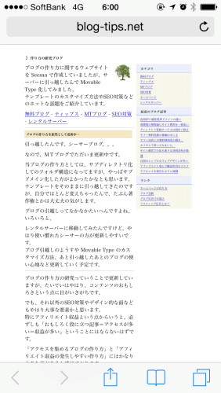
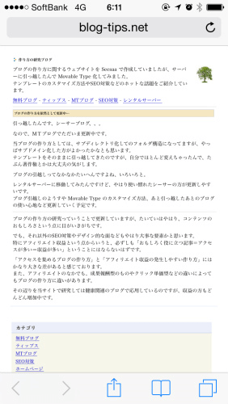
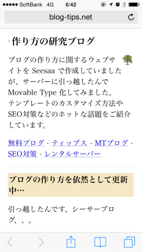
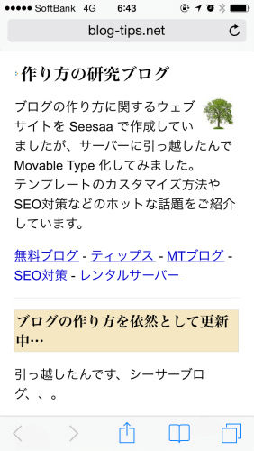
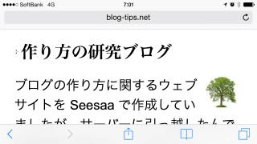

当ブログをスマホに対応しました。
当ブログをスマホに対応してみました。タブレット端末にはipadやipadミニ、ネクサス7などの中ぐらいのものもありますが、その辺はめんどうなんで、一番小さいスマホだけに対応するようにしております。
このスマホ対応のやり方についてですが、CSSにメディアクエリを追加すると簡単に設定できます。これはスマホだけに適応されるCSSを最後の方に記述することで、スマホ閲覧の時にだけ表示の仕方を変更してくれるものです。
@media screen and (max-device-width: 480px) {
ここにスマホ用のスタイルシートを記入する。
}
これをCSSの最後の方に追加しておくと、ＰＣでの閲覧時にはこの記述は無視されますが、デバイスの最大幅480pxのスマホで閲覧した場合にはこの記述が適用され、スマホ用の表示をしてくれます。
例えば、当ブログはiponeではこのように表示されています。

これでは閲覧しにくいので、これにメディアクエリをCSSに追加して表示の仕方を変更します。
とりあえず、各要素のフロートを解除してサイドバーの回り込みをはずし、横幅を広げてみるとこのようになります。
@media screen and (max-device-width: 480px) {
#container,#content,#links,#footer {width:890px;float:none;}
}

次に、文字が小さいのでfont-sizeを300%ぐらいにして大きくしてみるとこうなります。

次に、フォントスタイルを変更し、画像も大き目に表示されるように設定しました。
スマホ用のフォントスタイルについては、いろいろ試してみた結果、これがいいと思います。
font-family: ArialMT, "Hiragino Kaku Gothic ProN", "ヒラギノ角ゴ ProN W3", メイリオ, sans-serif;
画像を大きく表示させる場合は、以下の記述をします。
img {zoom:170%;}
そうするとこうなります。

このぐらいの大きさなら、スマホでも十分に閲覧できるのではないかと思います。
ちなみに、iphoneを横向きで表示させてみても特に問題ないようです。

今回、スマホ用のCSSをmax-device-width: 480pxで指定しましたが、この前にipad用のメディアクエリなども指定しておくと、各タブレット端末に対応できるかと思います。ただ、中ぐらいのタブレットの場合は、目をこらせば見れるレベルの大きさの画面かと思いますので、スマートフォンだけでも対応しておけばいいんじゃないかという気もします。
こんな感じでメディアクエリを使えば、htmlはいじらなくても、スタイルシートのみで対応できるので便利です。